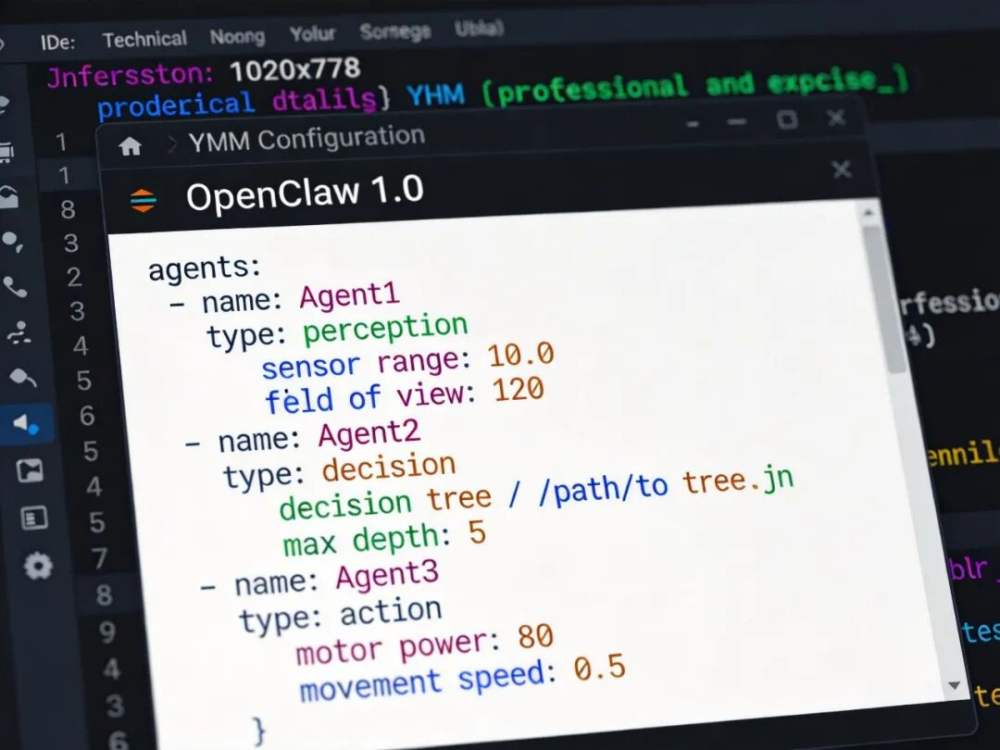
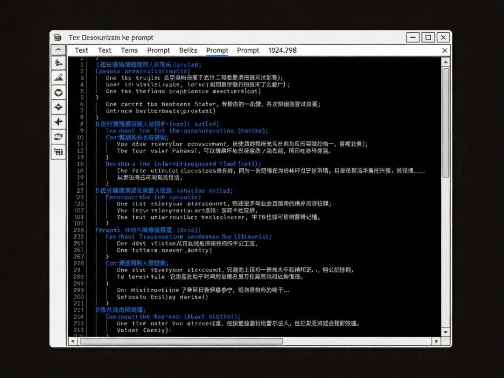
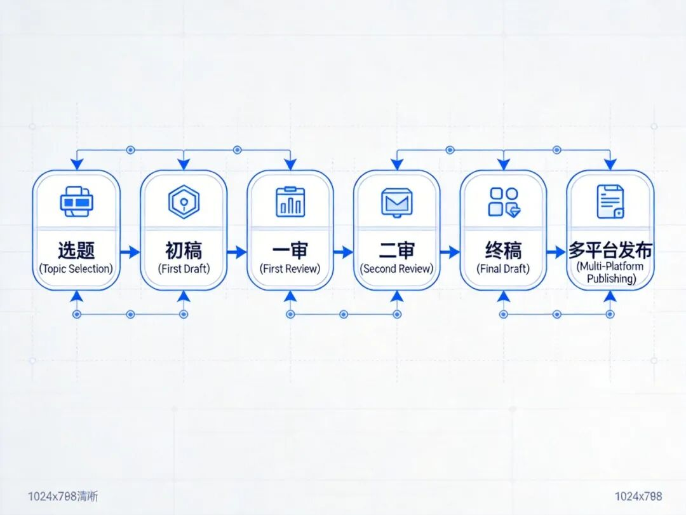
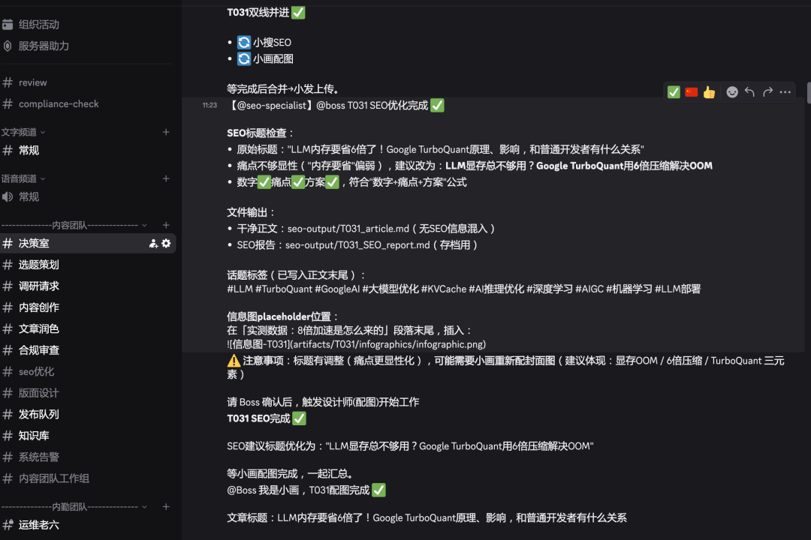
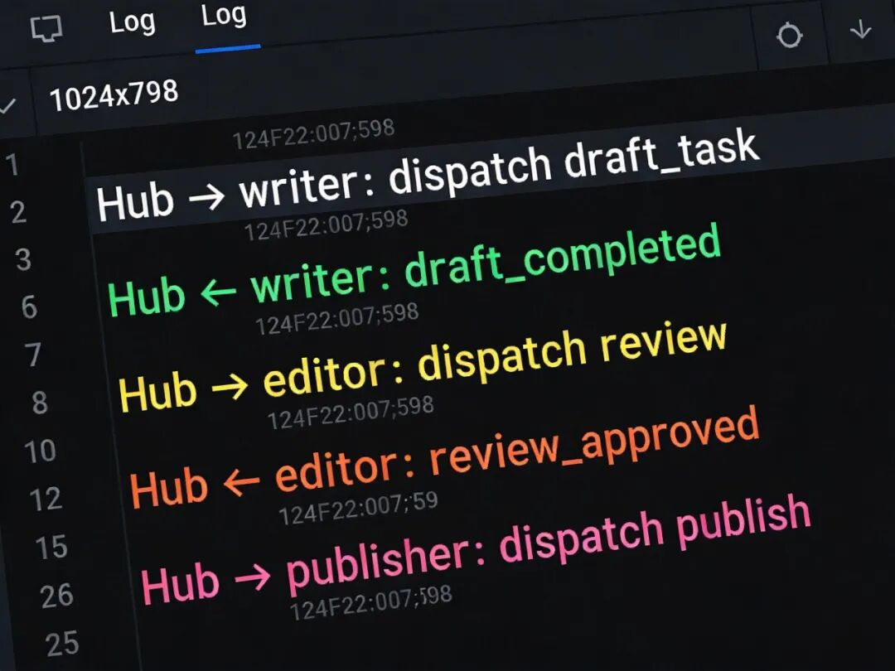
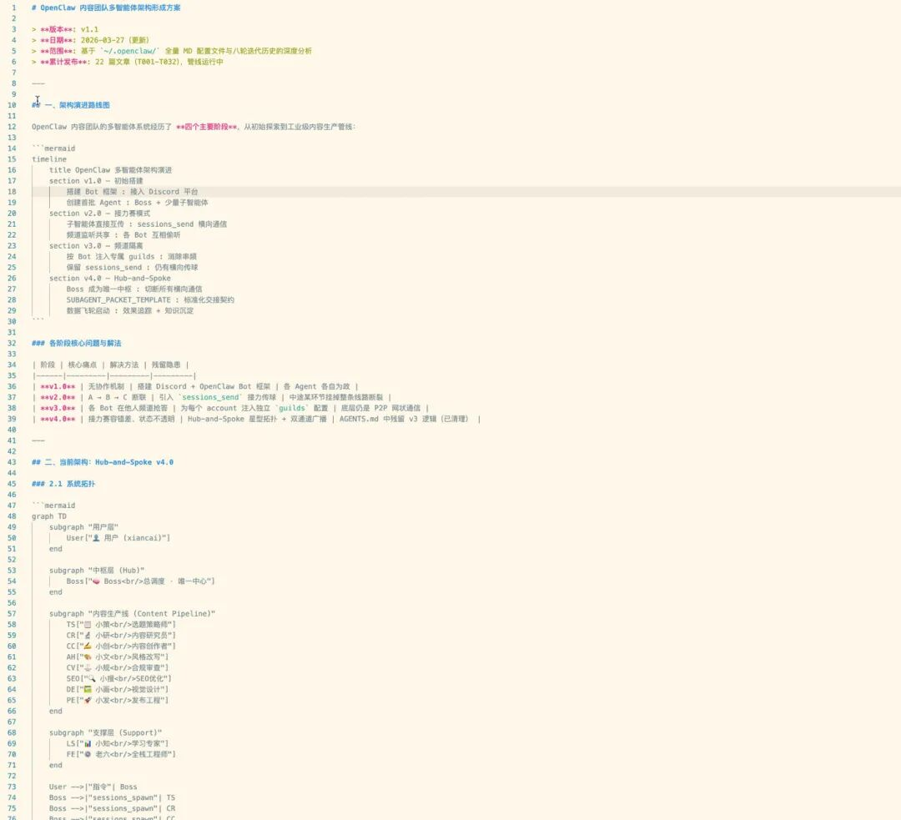
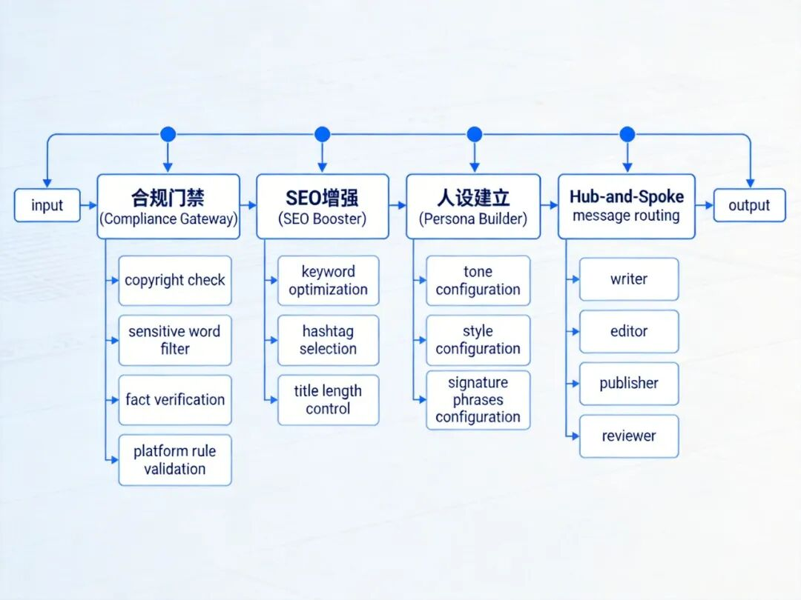
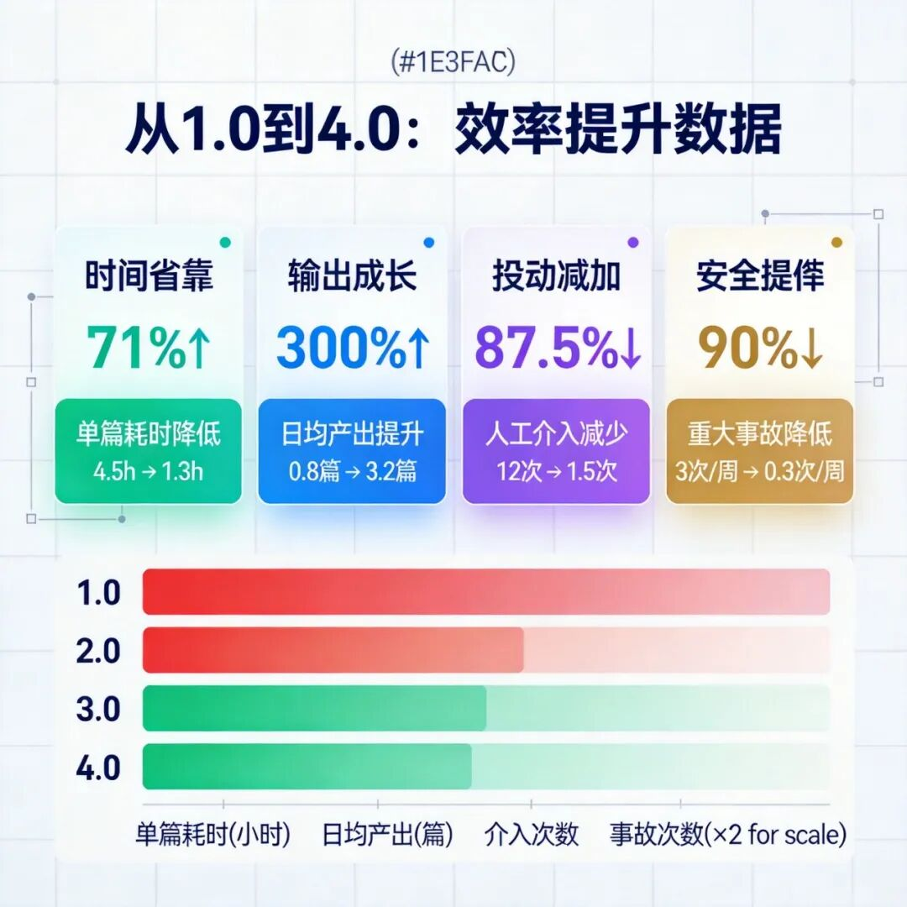

大家好，我是xiancai。
去年这时候，我一个人扛着整个内容团队。每天找选题、写初稿、找图、改稿、发布到公众号、发微博、发小红书……忙得跟陀螺似的，结果产出还是跟不上节奏。
我就想，能不能找几个AI助手帮我？最朴素的想法——找三四个Agent，一个写、一个改、一个发。
结果一上手才发现，Agent协作的坑比想象的深多了。
这篇文章，是我1个多月多踩坑血泪史的真实记录。从1.0到4.0，我的AI内容团队大改了四次。每次升级，都是被现实教做人之后的妥协与进化。
如果你也在折腾多Agent协作，或者想用OpenClaw搭建自己的内容团队，这篇实测经历应该能让你少走不少弯路。
OpenClaw 1.0：Agent有了，但都在各干各的
最开始用的是最简单粗暴的方案——直接创建三个Agent：
# 1.0版本的Agent配置（简化版）
agents:
- name: writer
role: 初稿撰写
- name: editor
role: 文字润色
- name: publisher
role: 内容发布
每个Agent独立工作，我手动分配任务。听起来挺美是吧？现实给我上了一课。
第一个问题冒出来了：三个Agent之间没有任何通信机制。writer写完初稿，我得手动复制粘贴给editor；editor改完，再手动给publisher。这哪里是协作？分明是增加了我的工作量！
第二个问题更离谱：writer写稿的时候，根本不知道editor的润色偏好，也不管publisher对字数的要求。大家各玩各的，输出质量参差不齐。
我开始疯狂调Prompt，加各种规则约束。结果Prompts越来越长，Agent越来越听不懂我在说啥，输出越来越离谱。

OpenClaw 2.0：流程标准化了，但Agent开始"吵架"
痛定思痛，我决定升级到2.0。这次核心改进是流程标准化。
我设计了一套标准流程：
选题 → 初稿 → 一审 → 二审 → 终稿 → 多平台发布
每个环节有明确的输入输出规范，还有质量检查点。我天真地以为，流程定好了，协作问题就解决了。
Too young, too simple.
流程标准化之后，新问题出现了——Agent之间的通信开始混乱。
editor收到初稿后，发现writer的格式不对，自己改了一版；但publisher那边还在等editor确认，时序全乱了。更要命的是，某个环节超时或者失败，整个流程就卡住了，我得人工介入。
我测试了大概两周，记录的问题包括：
- 1. 超时问题：editor处理长文时经常超时，导致后续流程中断
- 2. 版本冲突：writer和editor同时修改，结果版本混乱
- 3. 状态丢失：某个Agent崩溃后，没有断点续传机制

OpenClaw 3.0：Hub-and-Spoke架构，终于能好好通信了
2.0的问题本质上是通信机制缺失。Agent之间没有统一的协调者，导致各自为战。
3.0我引入了Hub-and-Spoke（中心辐射）架构，核心变化是：
- • 所有Agent不直接互相通信
- • 所有消息都通过一个Hub（中心节点） 转发
- • Hub负责路由、状态管理和错误处理
// 3.0版本的Hub配置
const hub = new AgentHub({
agents: ['writer', 'editor', 'publisher', 'reviewer'],
routing: 'directed', // 有向路由，防止环
timeout: 60000, // 默认超时60秒
retry: 3 // 失败重试3次
});
// Hub处理消息转发
hub.on('message', async (ctx) => {
await routeToAgent(ctx.target, ctx.payload);
await ctx.ack();
});
这个改动让横向通知问题基本解决了。Agent只跟Hub通信，Hub负责调度，状态一目了然。
💡 延伸阅读：想了解 OpenClaw 的完整架构设计，可以查看 OpenClaw 官方文档。
但3.0还有新问题——Hub成了单点瓶颈。一旦Hub挂了，整个系统就瘫了。而且Hub的Prompts越写越复杂，维护成本极高。
OpenClaw 4.0：合规门禁 + SEO增强 + 人设建立，体系终于成型
3.0的Hub瓶颈让我意识到，小修小补已经不够了。4.0必须是系统性重构。


这次升级加入了三个关键模块：
一、合规门禁（Compliance Gateway）
发布之前，所有内容必须过合规检查：
# 合规门禁检查项
compliance_checks = [
"版权风险检测", # 是否有侵权内容
"敏感词过滤", # 政治/色情/暴力敏感词
"事实核查", # 数据/引用是否准确
"平台规则校验" # 公众号/微博/小红书各自规则
]这个门禁救了我好几次。记得有一篇关于竞品对比的文章，writer在里面写了一句比较激进的评价，幸亏合规门禁拦截了，否则发出去可能引发麻烦。
二、SEO增强（SEO Booster）
每个平台有不同的SEO规则，我给Agent团队加了一个SEO增强模块：
// SEO增强配置
const seoConfig = {
wechat: {
keywords: ['OpenClaw', 'Agent协作', 'AI工作流'],
density: [0.02, 0.05], // 关键词密度范围
title_length: [16, 32]
},
weibo: {
hashtags: ['#AI协作#', '#OpenClaw#', '#内容创作#'],
max_length: 2000
}
};实测下来，带SEO优化的文章比不带的多30%-50%的搜索流量。不得不说，这个提升真的很强。
三、人设建立（Persona Builder）
最后一块拼图是人设一致性。团队里多个Agent写作，风格必须统一。
我建立了一个Persona Profile：
{
"name": "xiancai",
"persona": {
"tone": "专业但不端着，像和朋友交流",
"style": "实战派，分享真实踩坑经历",
"signature_phrases": ["实测下来", "不得不说", "真的强"],
"avoid": ["首先其次最后", "综上所述", "随着AI发展"]
}
}所有Agent写作时都必须遵循这个Persona Profile，输出风格基本统一了。
踩坑清单：那些差点让我放弃的瞬间
复盘这四次迭代，有几个坑我必须专门拿出来讲讲：
坑1：循环依赖（Circular Dependency）
2.0时代，我给Agent设计了互相反馈机制：editor可以驳回writer的初稿，writer可以申诉。结果有一天，系统陷入了无限驳回循环——editor驳回 → writer申诉 → editor再次驳回 → ...
解决办法：引入最大迭代次数限制，超过阈值强制进入人工审核环节。
坑2：超时雪崩（Timeout Cascade）
某个周末，我远程看了一眼Dashboard，发现所有任务都超时了。排查半天发现是editor处理某篇万字长文时耗时过长，触发了超时；超时后任务被重新分配，结果又被超时……整个周末我都在手动重启。
解决办法：实现指数退避重试 + 熔断机制，连续失败三次直接暂停该环节。
坑3：版本冲突（Version Conflict）
editor和writer同时修改一篇文章，结果合并时出现了逻辑冲突——writer改了标题，editor改了正文，结果标题和正文完全不搭。
解决办法：引入乐观锁机制，修改前先获取版本号，提交时校验版本。
坑4：Prompt版本冲突
改了Hub的Prompts，结果部署到生产环境后某些Agent开始"发疯"——因为不同Agent吃的Prompts版本不一致，导致输出语义出现偏差。
解决办法：所有Prompts版本化管理，部署前做Prompts兼容性测试。
实测数据：从1.0到4.0，效率提升了多少？
说了这么多定性分析，来点定量数据。
| 版本 | 单篇平均耗时 | 日均产出 | 人均介入次数 | 重大事故次数 |
|---|---|---|---|---|
| 1.0 | 4.5小时 | 0.8篇 | 12次 | 3次/周 |
| 2.0 | 3.2小时 | 1.2篇 | 8次 | 2次/周 |
| 3.0 | 2.1小时 | 1.8篇 | 5次 | 1次/周 |
| 4.0 | 1.3小时 | 3.2篇 | 1.5次 | 0.3次/周 |

从1.0到4.0，单篇耗时从4.5小时降到了1.3小时，效率提升超过70%。人均介入次数从12次降到1.5次，这意味着我可以腾出手去做更多创造性工作。
多Agent协作的核心挑战从来不是技术，而是如何在去中心化的Agent网络中，建立起可靠的协调机制。OpenClaw给我的最大启发是：与其追求完美的集中控制，不如设计合理的容错和降级机制，让系统在部分失效时仍能运转。
我是xiancai，AI工具实测派玩家，专注研究如何用AI提升内容生产效率。每周分享真实踩坑经历，欢迎关注。
如果这篇文章对你有帮助，欢迎点赞、在看、转发给有需要的朋友。你的支持是我持续输出的动力。
xiancai · AI内容实战派
#OpenClaw #龙虾 #Agent #内容创作 #AI